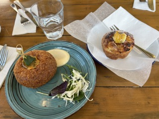
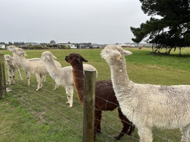
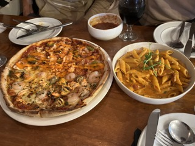

像深夜食堂一樣的療癒咖啡廳
來喝杯咖啡、聊聊你的人生故事，在安全不評判的空間裡，被好好聽見。這裡不是諮商，只是陪伴式聊天。
不評判的傾聽
沒有對錯、沒有說教。你可以慢慢說，也可以只說一點點。

小型名額與安全感
每晚名額有限，讓空間保持安靜、舒服，也讓每個人都能被照顧。
深夜療癒氛圍
柔光、安靜音樂、咖啡與甜點，讓你在夜晚慢慢降落。

如何進行
Step 1 預約今晚的座位或加入候補。
Step 2 來到店裡，選一個舒服的位置。
Step 3 你想說就說，想安靜也可以。
適合誰來
- 下班後覺得孤單、壓力大、想找地方喘口氣的人
- 想被聽見、但不想被教訓或被建議的人
- 對心理諮商有距離，但想先從「有人陪你聊」開始的人
- 喜歡安靜溫暖的咖啡館、夜晚氛圍、慢節奏的人
真實感與信任
「我其實沒說太多，但那晚被好好聽著，就覺得不孤單了。」
— 上班族・L
「不像諮商的壓力，更像有人陪你坐著的溫柔感。」
— 研究生・Y
「那盞燈真的很暖，像把一天的疲憊慢慢放下。」
— 自由接案・C
我們的規範
- 保密、尊重：你說的話留在這裡。
- 不錄音、不錄影，保護每個人的界線。
- 不對他人的故事做評價或指導。
- 每個人都有自己的界線與節奏。
提醒：本服務為陪伴與傾聽的咖啡廳體驗，非醫療或心理治療。
FAQ
- 這是諮商嗎？
- 不是。我們提供的是陪伴與傾聽的咖啡廳體驗，不做診斷或治療。
- 我不擅長聊天也可以去嗎？
- 可以的。你可以慢慢說，也可以只是安靜坐著。
- 可以一個人去嗎？
- 當然可以。很多人都是一個人來，這裡很安全。
- 會不會被推銷課程？
- 不會。我們不推銷課程或產品。
- 可以只坐著不說話嗎？
- 可以，安靜也是一種好好的休息。
- 臨時取消怎麼辦？
- 請提前 3 小時告知，我們會把位置留給候補的人。
預約與候補表單
你想說多少都可以，我們會回覆確認。